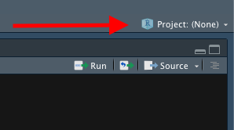
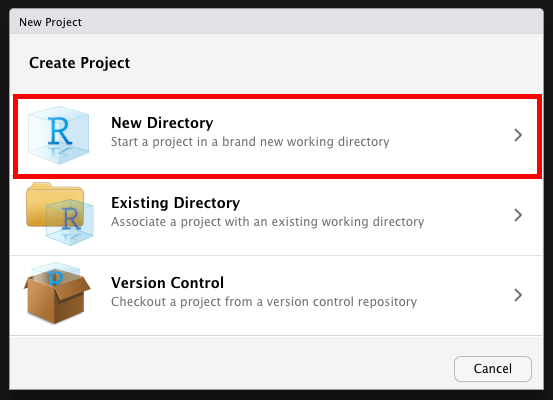
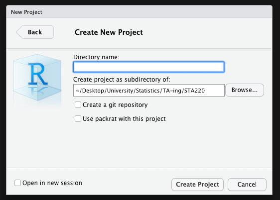

STA220 Additional Materials
Michal Malyska
Introduction
Since one of my goals is to teach this course next year, in my free time I will be writing up some materials that would serve as a guide. It is by no means necessary to ready any of the things on here to succeed in the course, however I hope tips and readings I post here could help speed up your work and provide additional understanding of the material, beyond what you learn in the classroom right now.
Resources:
In case you have never worked with R up until this point, below is a guide to setting everything up. If you are ready, just use the navbar on the left to skip this and go to the first chapter - Visualizations. I would advise that you at least take a look at the packages I am using for this.
Downloading R and Rstudio.
Downloading important packages
Open Rstudio, and navigate to the console. Then run the following commands to get the packages I highly recommend you get:
install.packages(c(‘gridExtra’,‘summarytools’,‘tidyverse’,‘plotly’))
You might need to replace the quotation marks if you copypaste this.
This will install all the packages we should need for the class and beyond. Whenever you want to add a package you can either call the command:
install.packages(<quoted package name>)
or navigate to the Files and plots pane in Rstudio, click on packages, then install, and type in the name.
Note that you only need to do this once, and the packages will remain for any R script you are writing.
Learning
There is a number of resources available for you to learn and master the tidyverse package, which is what you will be using if you ever work with R. It’s technically not required for the course but it will make your life a lot easier.
Learn R with tidyverse - this on it’s own should give you good enough background to handle most of the coding you will ever do in R, both in class, and in a professional setting.
Advanced R with tidyverse - far beyond the scope of what’s needed for the course, but a great resource if you want to get involved with R.
Cheatsheets - very useful set of cheatsheets that you should probably keep open whenever you are working with tidyverse. (Especially the visiualization one)
GGPlot Flipbook - The best resource to get familiar with the slightly unintuitive syntax of ggplot.
Some other packages you should consider looking into, that will come handy during this class:
“car” - it is “the package” for regression models.
“summarytools” - contains function “dfSummary” which is the fastest way to get meaningful first glance at the data. It’s a good compromise between the ease of using “summary” or “glance”, and providing as much information as possible.
“forcats” - package for working with factors in r, part of the tidyverse family but not included in the tidyverse itself.
Just to cover all bases below I will show you the simple workflow that I follow when working with a new dataset, like you will be doing during this class.
RStudio Setup and settings
If this is your first time using RStudio, you should adjust your settings:
Navigate to Tools -> Global Options
Change “Save workspace to .RData on exit” to Never
Uncheck “Restore .RData into workspace at startup”
This is what mine look like:

Now, every time you want to start working on something, you should begin by creating an Rproject. This helps you keep track of the files, sets your working directory so that data loading is easier, and you should do it almost always.
Now that we have all that out of the way let’s start with what to do once you have RStudio open and ready to work.
File Setup
Since you will need to create pdfs from your code with figures and equations you will be using the knitr package and will be working in .Rmd files. This is the most common way to write anything in R that isn’t pure code. Make sure you have some distribution of LaTeX downloaded as it is necessary to create the pdfs. I recommend MikTeX, but it shouldn’t matter which one you have for this course.
When you create a new .Rmd file you will notice that at the top it will have a header containing the file title, your name and date. If you want to add a table of contents (which is created from headers) just change the output line to look like this:

To actually work with pdf creation you will need to download a LaTeX distribution. Navigate to this link, and download the appropriate one (MacTeX for Macs and MikTeX for Windows).
After you are done restart your R.
How to work in R without pain
Projects
Each time you work on a new “thing” whether it be a course, or research, I recommend you set up a project. The way to do it is:
Open RStudio
Look in the top right corner, you will see a project icon.

- Click it and select New Project, then select New Directory

- Create your new folder (It creates a regular folder with a special file inside)

Now whenever you work in RStudio just open up the project and work there. It will automatically set your working directory to that folder, and open up all the files you had open previously. You can tell that the project is open by looking in the top right corner again. This website is written in an RProject I called “Files” so when I look in my top right corner I see this:

Once you are in a project you should work in RMarkdown files, and knit them to pdf. That way you get very crisp, clean project reports.
Packages
At the start of each file you should also load ALL the packages you will be using. Please don’t scatter library calls throughout your file.
library(gridExtra)
library(summarytools)
library(tidyverse)
library(forcats)
set.seed(217828) # This line makes the random generation for this file be the same
# Every time it is run
library(plotly) # You don't need this
library(gganimate) # Or thisLoading Data
First let’s see how we would load data from a downloaded “.csv” file:
The example dataset will be the one create for the Actuarial Students National Association case competition technical challenge from this year. If you are interested in how the data was created you can check out the personal projects tab and find it under “ASNA Case Comp”.
# Load in the example.csv file that is in the working directory (this is assuming either the project
# was created or manual change of working directory happened before this line)
# Using Base reading (not advised)
data1 <- read.csv("training_data.csv")
# Using Tidyverse loading
data2 <- read_csv("training_data.csv")## Parsed with column specification:
## cols(
## id = col_double(),
## Education = col_character(),
## EmploymentStatus = col_character(),
## Income = col_double(),
## `Marital Status` = col_character(),
## `State Code` = col_character(),
## Coverage = col_character(),
## Gender = col_character(),
## `Location Code` = col_character(),
## `Monthly Premium Auto` = col_double(),
## `Months Since Last Claim` = col_double(),
## `Months Since Policy Inception` = col_double(),
## `Number of Open Complaints` = col_double(),
## `Number of Policies` = col_double(),
## `Claim Reason` = col_character(),
## `Sales Channel` = col_character(),
## `Vehicle Class` = col_character(),
## `Vehicle Size` = col_character(),
## `Claim Class` = col_double()
## )# Load data specifying all possible options:
data3 <- read_csv(file = "training_data.csv", # file path relative to WD
col_names = TRUE, # Does the file include column names
na = c("", "NA", "N/A"), # What are the missing values in the file
#(specified in a vector)
quoted_na = TRUE, # should missing values inside of quotes be missing
skip = 0, # How many lines to skip
n_max = Inf, # How many lines to read at most (Inf = infinity)
guess_max = 10000 # How many records to use to guess the type of column
# if not specified in col_types = c()
)## Parsed with column specification:
## cols(
## id = col_double(),
## Education = col_character(),
## EmploymentStatus = col_character(),
## Income = col_double(),
## `Marital Status` = col_character(),
## `State Code` = col_character(),
## Coverage = col_character(),
## Gender = col_character(),
## `Location Code` = col_character(),
## `Monthly Premium Auto` = col_double(),
## `Months Since Last Claim` = col_double(),
## `Months Since Policy Inception` = col_double(),
## `Number of Open Complaints` = col_double(),
## `Number of Policies` = col_double(),
## `Claim Reason` = col_character(),
## `Sales Channel` = col_character(),
## `Vehicle Class` = col_character(),
## `Vehicle Size` = col_character(),
## `Claim Class` = col_double()
## )# This is to remove two of the redundant data files from my wd
df <- data3
rm(list = c("data1", "data2", "data3"))In most cases you will want to specify at least some of the parameters from the cell above, especially helpful is guess_max, and na. However in this course we will be working mostly with nicely formatted data so it shouldn’t be an issue.
Analyzing Data
I will skip showing you base R way of analyzing data, I’ve never seen it used outside of classes, and is neither easier nor faster. If you are really interested and want to work in a field that has extremely harsh regulations regarding software (clinical trials maybe?), you can use the swirl package to learn doing it.
# Take a first glance at the data:
dfSummary(df)## Data Frame Summary
##
## Dimensions: 45000 x 19
## Duplicates: 0
##
## -------------------------------------------------------------------------------------------------------------------------------------------
## No Variable Stats / Values Freqs (% of Valid) Graph Valid Missing
## ---- -------------------------------- -------------------------------- ------------------------ ------------------------ -------- ---------
## 1 id Mean (sd) : 22499.5 (12990.5) 45000 distinct values : : : : : : : : : : 45000 0
## [numeric] min < med < max: (Integer sequence) : : : : : : : : : : (100%) (0%)
## 0 < 22499.5 < 44999 : : : : : : : : : :
## IQR (CV) : 22499.5 (0.6) : : : : : : : : : :
## : : : : : : : : : :
##
## 2 Education 1. Bachelor 13617 (30.3%) IIIIII 45000 0
## [character] 2. College 12965 (28.8%) IIIII (100%) (0%)
## 3. Doctor 1689 ( 3.8%)
## 4. High School or Below 13133 (29.2%) IIIII
## 5. Master 3596 ( 8.0%) I
##
## 3 EmploymentStatus 1. Disabled 1992 ( 4.4%) 45000 0
## [character] 2. Employed 28104 (62.5%) IIIIIIIIIIII (100%) (0%)
## 3. Medical Leave 2177 ( 4.8%)
## 4. Retired 1332 ( 3.0%)
## 5. Unemployed 11395 (25.3%) IIIII
##
## 4 Income Mean (sd) : 37563.3 (30298) 5657 distinct values : 45000 0
## [numeric] min < med < max: : (100%) (0%)
## 0 < 33879 < 99981 : :
## IQR (CV) : 61987 (0.8) : : : . . . .
## : : : : : : : : : :
##
## 5 Marital Status 1. Divorced 6673 (14.8%) II 45000 0
## [character] 2. Married 26096 (58.0%) IIIIIIIIIII (100%) (0%)
## 3. Single 12231 (27.2%) IIIII
##
## 6 State Code 1. IA 12757 (28.3%) IIIII 45000 0
## [character] 2. KS 3972 ( 8.8%) I (100%) (0%)
## 3. MO 15500 (34.4%) IIIIII
## 4. NE 8447 (18.8%) III
## 5. OK 4324 ( 9.6%) I
##
## 7 Coverage 1. Basic 27331 (60.7%) IIIIIIIIIIII 45000 0
## [character] 2. Extended 13582 (30.2%) IIIIII (100%) (0%)
## 3. Premium 4087 ( 9.1%) I
##
## 8 Gender 1. F 22947 (51.0%) IIIIIIIIII 45000 0
## [character] 2. M 22053 (49.0%) IIIIIIIII (100%) (0%)
##
## 9 Location Code 1. Rural 8834 (19.6%) III 45000 0
## [character] 2. Suburban 28481 (63.3%) IIIIIIIIIIII (100%) (0%)
## 3. Urban 7685 (17.1%) III
##
## 10 Monthly Premium Auto Mean (sd) : 93.1 (34.3) 201 distinct values : 45000 0
## [numeric] min < med < max: : (100%) (0%)
## 61 < 83 < 298 :
## IQR (CV) : 41 (0.4) : : .
## : : : . .
##
## 11 Months Since Last Claim Mean (sd) : 15.1 (10.1) 36 distinct values : . 45000 0
## [numeric] min < med < max: : : : . (100%) (0%)
## 0 < 14 < 35 : : : : : : . : .
## IQR (CV) : 17 (0.7) : : : : : : : : : :
## : : : : : : : : : :
##
## 12 Months Since Policy Inception Mean (sd) : 48.1 (27.9) 100 distinct values . . . : : : . . 45000 0
## [numeric] min < med < max: : : : : : : : : : . (100%) (0%)
## 0 < 48 < 99 : : : : : : : : : :
## IQR (CV) : 47 (0.6) : : : : : : : : : :
## : : : : : : : : : :
##
## 13 Number of Open Complaints Mean (sd) : 0.4 (0.9) 0 : 35541 (79.0%) IIIIIIIIIIIIIII 45000 0
## [numeric] min < med < max: 1 : 5123 (11.4%) II (100%) (0%)
## 0 < 0 < 5 2 : 1880 ( 4.2%)
## IQR (CV) : 0 (2.3) 3 : 1440 ( 3.2%)
## 4 : 704 ( 1.6%)
## 5 : 312 ( 0.7%)
##
## 14 Number of Policies Mean (sd) : 3 (2.4) 1 : 16026 (35.6%) IIIIIII 45000 0
## [numeric] min < med < max: 2 : 11307 (25.1%) IIIII (100%) (0%)
## 1 < 2 < 9 3 : 5732 (12.7%) II
## IQR (CV) : 3 (0.8) 4 : 2038 ( 4.5%)
## 5 : 1946 ( 4.3%)
## 6 : 1826 ( 4.1%)
## 7 : 2153 ( 4.8%)
## 8 : 1852 ( 4.1%)
## 9 : 2120 ( 4.7%)
##
## 15 Claim Reason 1. Collision 18562 (41.2%) IIIIIIII 45000 0
## [character] 2. Hail 14319 (31.8%) IIIIII (100%) (0%)
## 3. Other 5123 (11.4%) II
## 4. Scratch/Dent 6996 (15.6%) III
##
## 16 Sales Channel 1. Agent 17117 (38.0%) IIIIIII 45000 0
## [character] 2. Branch 12514 (27.8%) IIIII (100%) (0%)
## 3. Call Center 8681 (19.3%) III
## 4. Web 6688 (14.9%) II
##
## 17 Vehicle Class 1. Four-Door Car 22760 (50.6%) IIIIIIIIII 45000 0
## [character] 2. Luxury Car 831 ( 1.8%) (100%) (0%)
## 3. Luxury SUV 940 ( 2.1%)
## 4. Sports Car 2472 ( 5.5%) I
## 5. SUV 8781 (19.5%) III
## 6. Two-Door Car 9216 (20.5%) IIII
##
## 18 Vehicle Size 1. Large 4620 (10.3%) II 45000 0
## [character] 2. Medsize 31683 (70.4%) IIIIIIIIIIIIII (100%) (0%)
## 3. Small 8697 (19.3%) III
##
## 19 Claim Class Mean (sd) : 2.5 (1.1) 1 : 11110 (24.7%) IIII 45000 0
## [numeric] min < med < max: 2 : 12128 (27.0%) IIIII (100%) (0%)
## 1 < 2 < 4 3 : 11549 (25.7%) IIIII
## IQR (CV) : 1 (0.4) 4 : 10213 (22.7%) IIII
## -------------------------------------------------------------------------------------------------------------------------------------------As you can see the summary provided by the dfSummary function is quite comprehensive. You see the type, what percentage of values is valid (non-missing), the simple summary (mean, median, sd, etc), a nice ASCII plot of the distribution(!!!) of data, and the number of observations in the most common values. If you were to use base R to get all of this, it would probably be around 5-6 lines of code per column of your data.
Now I will show you how to create a summary datasets using tidyverse and wrangle the data in general. There are a few very important functions you should learn:
mutate - create a column as a transformation of existing columns
select - select a subset of columns
filter - filter only rows fuliling the criteria
rename - rename a column
group_by - allows you to group your data based on a data column
summarize - self explanatory
One more very important part of the tidyverse is the pipe operator %>% which feeds the results of one function as the first argument to the next function. It makes the code a lot more readable and allows you to write it in a better way since you don’t go in to out but rather in order.
Below I will show you some examples of how I would create some potentially interesting summaries of data:
summary1 <- df %>% # This line specifies the new dataset name, and starting data + pipe into
dplyr::select(`Vehicle Size`, `Claim Class`, `Monthly Premium Auto`, Coverage, `Marital Status`) %>%
# I select only the few columns of interest
filter(`Monthly Premium Auto` > 65) %>% # I only want the people that have Auto premiums above
# 65, this will usually come from the business or research question you are trying to answer
group_by(`Vehicle Size`, Coverage, `Marital Status`) %>% # I want to summarize
#them by the categorical variables
summarise(mean_prem = mean(`Monthly Premium Auto`), # I want to have mean auto premium
count = n(), # Count of those vehicles
avg_sev = mean(`Claim Class`) # I want to have the average Claim Class (severity)
)
# Now I will take this created summary and analyze it further:
summary2 <- summary1 %>%
mutate(Total_Premium = mean_prem * count) %>% # I create the total premium from the group
# as Average Premium * count of policies in that group
filter(Total_Premium > 100000) # Filter out lines of business that are
# under 100k in total premium
# This is the subset of data that might be of interest to me, let's look at it again:
dfSummary(summary2)## Data Frame Summary
##
## Dimensions: 11 x 7
## Duplicates: 0
##
## ----------------------------------------------------------------------------------------------------------------------
## No Variable Stats / Values Freqs (% of Valid) Graph Valid Missing
## ---- ----------------- ---------------------------------- -------------------- -------------------- -------- ---------
## 1 Vehicle Size 1. Large 1 ( 9.1%) I 11 0
## [character] 2. Medsize 7 (63.6%) IIIIIIIIIIII (100%) (0%)
## 3. Small 3 (27.3%) IIIII
##
## 2 Coverage 1. Basic 6 (54.5%) IIIIIIIIII 11 0
## [character] 2. Extended 4 (36.4%) IIIIIII (100%) (0%)
## 3. Premium 1 ( 9.1%) I
##
## 3 Marital Status 1. Divorced 2 (18.2%) III 11 0
## [character] 2. Married 6 (54.5%) IIIIIIIIII (100%) (0%)
## 3. Single 3 (27.3%) IIIII
##
## 4 mean_prem Mean (sd) : 98.6 (0.9) 11 distinct values : 11 0
## [numeric] min < med < max: : (100%) (0%)
## 96.5 < 98.9 < 99.9 :
## IQR (CV) : 0.5 (0) :
## : : : : : :
##
## 5 count Mean (sd) : 2916.4 (2459.2) 11 distinct values : 11 0
## [integer] min < med < max: : (100%) (0%)
## 1204 < 2204 < 9356 : :
## IQR (CV) : 2112 (0.8) : : :
## : : : :
##
## 6 avg_sev Mean (sd) : 2.6 (0) 11 distinct values : : 11 0
## [numeric] min < med < max: : : (100%) (0%)
## 2.5 < 2.6 < 2.6 : : .
## IQR (CV) : 0 (0) : : :
## : : : :
##
## 7 Total_Premium Mean (sd) : 287671.1 (242094.8) 11 distinct values : 11 0
## [numeric] min < med < max: : (100%) (0%)
## 119142 < 218013 < 920662 : :
## IQR (CV) : 210999.5 (0.8) : : :
## : : : :
## ----------------------------------------------------------------------------------------------------------------------Normally at this point I would be making some simple graphs and reporting back to the business what they wanted to know, or digging deeper for causes depending on the communicated need. If this was part of my own project I would try to investigate further why there are not that many large cars in our book and why are the “Premium” coverages not a big part of our business.
To get started with the visualisation part, I will prepare some simple graphs from the newly obtained summary data. The main plotting function we will be using is ggplot2 (as opposed to built in functions), the syntax is not very intuitive at first, and there are some kinks you will have to figure out, but ultimately the combination of dplyr (tidyverse) data wrangling and analysis with ggplot2 makes for a very powerful and simple to use set of tools.
plot <- ggplot(data = summary2, # Create a plot object, from summary2
mapping = aes(x = `Vehicle Size`, # x axis is Vehicle Size
y = `Total_Premium`, # y axis is Total Premium
fill = Coverage)) + # The inside of the figures is colored by coverage
geom_col(show.legend = TRUE) + # Add a column plot (barplot is for frequencies in ggplot2)
coord_flip() + # Flip the chart to be sideways
theme_minimal() + # Set the minimal theme
labs(title = "Simple plotting illustration", # Add title
x = "Vehicle Size", # Rename X axis
y = "Total Premium($)") # Rename Y axis
plot # Show the plot
Is this a good plot? Why should I choose to omit the lines that have less than 100k in Total premium for this plot? Those are very good questions. Let’s dig a bit deeper into visualization of data, starting with Why?
Visualization
The why
Let’s begin with a short exercise - I have loaded 12 new datasets into my memory. They are all simple and contain 142 observations each of 2 variables - x and y. I will begin by just looking at some data summaries that we typically look at in this class. Mean, standard deviation, and correlation of the two variables.
library(datasauRus)
datasaurus_dozen %>%
group_by(dataset) %>%
summarize(
mean_x = mean(x),
mean_y = mean(y),
std_dev_x = sd(x),
std_dev_y = sd(y),
corr_x_y = cor(x, y)
) %>%
mutate(ID = 1:13) %>%
dplyr::select(-dataset)## # A tibble: 13 x 6
## mean_x mean_y std_dev_x std_dev_y corr_x_y ID
## <dbl> <dbl> <dbl> <dbl> <dbl> <int>
## 1 54.3 47.8 16.8 26.9 -0.0641 1
## 2 54.3 47.8 16.8 26.9 -0.0686 2
## 3 54.3 47.8 16.8 26.9 -0.0683 3
## 4 54.3 47.8 16.8 26.9 -0.0645 4
## 5 54.3 47.8 16.8 26.9 -0.0603 5
## 6 54.3 47.8 16.8 26.9 -0.0617 6
## 7 54.3 47.8 16.8 26.9 -0.0685 7
## 8 54.3 47.8 16.8 26.9 -0.0690 8
## 9 54.3 47.8 16.8 26.9 -0.0686 9
## 10 54.3 47.8 16.8 26.9 -0.0630 10
## 11 54.3 47.8 16.8 26.9 -0.0694 11
## 12 54.3 47.8 16.8 26.9 -0.0666 12
## 13 54.3 47.8 16.8 26.9 -0.0656 13As we can see, the numerical summaries are all pretty much the same - so we would expect that whether we are fitting straight lines through the dataset (Linear Regression), or doing simple hypothesis testng, the results should be fairly similar. Let’s confirm that.
Tidyverse allows us to do some beautiful tricks, like nesting the linear models in the tibble we are working with. If you want to know a bit more on how this is done take a look at the R for Data Science book online, chapter 25 : “Many Models”.
# Create nested datasets
by_dataset <- datasaurus_dozen %>%
group_by(dataset) %>%
nest()
# Write the simple linear regression function we care about.
slr <- function(df) {
lm(y ~ x, data = df)
}
# Use the function on all the nested datasets using the map function.
by_dataset <- by_dataset %>%
mutate(model = map(data, slr))
# Let's look at model coefficients (This is the intercept of the line and the slope)
# y = Intercept + Slope * x
for (model in by_dataset$model) {
print(model$coefficients)
}## (Intercept) x
## 53.4529784 -0.1035825
## (Intercept) x
## 53.4251300 -0.1030184
## (Intercept) x
## 53.21108724 -0.09916499
## (Intercept) x
## 53.8908434 -0.1115508
## (Intercept) x
## 53.5542263 -0.1053169
## (Intercept) x
## 53.326679 -0.101113
## (Intercept) x
## 53.8087932 -0.1100695
## (Intercept) x
## 53.0983419 -0.0969127
## (Intercept) x
## 53.7970450 -0.1098143
## (Intercept) x
## 53.8094708 -0.1101675
## (Intercept) x
## 53.8125956 -0.1102184
## (Intercept) x
## 53.8497077 -0.1108172
## (Intercept) x
## 53.6349489 -0.1069408We can see that we fit pretty much the same line (y = 53.8 - 0.1x) for all the sets of data. Now let’s see what the datasets look like, with the fitted lines.
ggplot(datasaurus_dozen, aes(x = x, y = y, colour = dataset)) +
geom_point() +
theme_void() +
theme(legend.position = "none") +
facet_wrap( ~ dataset, ncol = 4) +
geom_abline(slope = -0.1, intercept = 53.8, colour = "red", size = 1)
Clearly none of these datasets should have a linear model fit to them. And this is why you should always start with looking at your data before doing any analysis.
What makes a good chart?
In the works
Assessing Normality
Most people starting their journey in statistics
struggle with something that used to be problematic for me as well - assessing normality from Normal QQ-plots. Understandably, It’s very difficult to quantify how much does a plot look like a “normal” Normal QQ-plot would, especially at smaller sample sizes. I want to show you two approaches that have helped me, and that I usually resort to, when looking for normality.
Shapiro Wilk test
Description and Example
Shapiro Wilk test is conceptually somewhat similar to what you’ve seen so far for assesing the equality of variances - the F test. The null hypothesis is that the data comes from a normal distribution, and looks to see if the the data gives evidence against that assumption. The test statistic is beyond the scope of this course, and is an example of something you will learn if you take STA355. If you’re interested you can just look at the wikipedia page. One very good property of the Shapiro-Wilk test is that it been shown that it has the best power for a given significance - meaning it is most likely to reject the null given that the data is not normal for a given significance level.
There are no new packages for you to install to be able to run a Shapiro-Wilk test in R, the function is built in with the name shapiro.test(). You can find an example code, where I assess the normality of 5 different generated datasets.
# First, I'm gonna generate a few sample datasets for our tests:
ex1 <- rnorm(5000)
ex2 <- rt(100, 3)
ex3 <- sample(c(1,-1),size = 1000 ,replace = TRUE)*(rexp(1000, rate = 5) - 5)
ex4 <- rcauchy(250)
ex5 <- rnorm(15)
ex6 <- rt(50, 1)
# Then I will perform shapiro wilk tests on all of them and see how well it performs:
test1 <- shapiro.test(ex1)
test2 <- shapiro.test(ex2)
test3 <- shapiro.test(ex3)
test4 <- shapiro.test(ex4)
test5 <- shapiro.test(ex5)
test6 <- shapiro.test(ex6)
# Let's see the p-values for each of the tests:
p_vals <- tibble(normal = as_factor(c("Yes", "No", "No", "No" ,"Yes", "No")),
p_val = c(test1$p.value, test2$p.value,
test3$p.value, test4$p.value,
test5$p.value, test6$p.value))
ggplot(data = p_vals) +
aes(x = normal) +
aes(y = p_val) +
aes(col = fct_inorder(normal)) +
scale_color_manual(name = "", values = c("green", "red")) +
geom_jitter(width = 0.1, height = 0, size = 4) +
labs(title = "P-values of Shapiro-Wilk test for the example datasets",
x = "Normal?",
y = "P-value") +
geom_hline(yintercept = 0.05, lty = 2, col = "red") +
theme_bw(base_size = 12) +
scale_y_continuous(limits = c(0,1))
We can see that it peforms quite well, in fact all the p-values for non-normal distributions are so close to 0, I had to add sideways jitter for you to be able to tell them apart.
Simulations
Now I will try to see it’s behaviour under the null hypothesis, by simulating normals and looking at the distribution of p-values.
new_pvals <- NULL
for (i in 1:1000) {
ex7 <- rnorm(100)
test7 <- shapiro.test(ex7)
new_pvals <- c(new_pvals, test7$p.value)
}
new_pvals <- tibble(ID = 1:1000,
p_values = new_pvals,
reject = if_else(p_values < 0.05, TRUE, FALSE))
ggplot(data = new_pvals) +
aes(y = p_values) +
aes(x = ID) +
aes(col = reject) +
geom_point(size = 1) +
scale_color_manual(name = "", values = c("green", "red"),
labels = c("Don't reject", "Reject")) +
labs(title = "P-values of Shapiro-Wilk test for normal simulation",
x = "ID",
y = "P-value") +
geom_hline(yintercept = 0.05, lty = 2, col = "red") +
theme_bw(base_size = 12) +
scale_y_continuous(limits = c(0,1))
prop_reject <- mean(new_pvals$reject)Now this plot doesn’t tell us too many new things, but you can clearly see the uniform distribution of p-values under the null hypothesis (again if you want to learn more you can take STA355), and we can see that at the \(\alpha = 0.05\) we rejected 0.058 of the simulations, which is exactly what we would expect. Now how about seeing how it performs distinguishing t-distributions with higher and higher degrees of freedom from normals. Again I will run the simulation:
# I will run a simulation of 1000 tests each from t distributions with varying degrees
# of freedom.
dfs <- c(1, 2, 3, 4, 5, 10, 20, 50, 100, 1000)
new_pvals <- NULL
dfs_ind <- NULL
for (df in dfs) {
for (i in 1:1000) {
ex8 <- rt(100, df = df)
test8 <- shapiro.test(ex8)
dfs_ind <- c(dfs_ind, df)
new_pvals <- c(new_pvals, test8$p.value)
}
}
new_pvals <- tibble(ID = 1:length(dfs_ind),
degrees = as.character(dfs_ind),
p_values = new_pvals,
reject = if_else(p_values < 0.05, "Reject", "Don't reject"))
ggplot(data = new_pvals) +
aes(y = p_values) +
aes(x = as.factor(dfs_ind)) +
aes(col = reject) +
geom_jitter(width = 0.1, height = 0, size = 1) +
scale_color_manual(name = "", values = c("red", "green"),
labels = c("Don't reject", "Reject")) +
labs(title = "P-values of Shapiro-Wilk test for t simulation",
x = "Degrees of Freedom",
y = "P-value") +
geom_hline(yintercept = 0.05, lty = 2, col = "red") +
theme_bw(base_size = 12) +
scale_y_continuous(limits = c(0,1))
p_vals_summary <- new_pvals %>% group_by(degrees) %>%
summarize(reject_prob = mean(p_values < 0.05)) %>%
mutate(degrees = as.integer(degrees)) %>%
arrange(degrees)
print(p_vals_summary)## # A tibble: 10 x 2
## degrees reject_prob
## <int> <dbl>
## 1 1 1
## 2 2 0.981
## 3 3 0.881
## 4 4 0.704
## 5 5 0.559
## 6 10 0.224
## 7 20 0.107
## 8 50 0.071
## 9 100 0.055
## 10 1000 0.034As we can see beyond 50 degrees of freedom we are not able to distinguish a t distribution from a normal even with a large sample (1000). Try thinking what would happen if we only had 100 or fewer datapoints. What is interesting to see is that even for 2 degrees of freedom there are some samples that didn’t provide enough evidence to reject the normality assumption.
Discussion and Limitations
Shapiro-Wilk has a very nice property of giving us something tangible to talk about when assessing normality of our data. However it has one limitation that is worth keeping in mind - it only works on sample sizes up to 5000 points. Of course there are ways to get around that problem (Try thinking about how you would do this!)
My Approach:
Normal Q-Q Plots
Unnecessary introduction
As you can probably tell I am overly excited that I now know how to make buttons in Rmarkdown that will go on my website.
Interpreting Q-Q Plots
The general idea behind interpreting Normal Q-Q plots is that we transform our data in a very specific way. Again, if you want to know a bit more, take STA355. For the purpose of this course all you need to know is that you will expect the newly transformed data to lie on a straight line y = x. However, because the world is not ideal, we will always have data that doesn’t lie on that straight line exactly, that would be too easy. This doesn’t necessarily mean that we have outliers. I’m actually quite convinced that the probability of all points being exactly on that line is exactly 0 for a given sample larger than a few points.
My solution
So let’s say I am looking at a nice small set of 100 observations. How do I assess the normality in practice ? Back when I was taking my first steps in R and data analysis, as you are now, I struggled with this immensly and always resorted to Shapiro-Wilk to avoid the problem. Then sometime last year I stumbled upon an article that proposed a solution so simple yet so brilliant I am still quite angry for not coming up with it on my own.
# Let's say I have some data, distribution of which I don't know.
my_data <- rnorm(100) # Let's pretend this never happened
prepare_grid <- function(my_data, multiplier = 8){
# Simulate 3, 8, 15 or some other (perfect square - 1) number of standard normals
# with the same sample size
l <- length(my_data)
my_normals <- rnorm(n = multiplier * l)
combined_data <- tibble(ID = c(rep(1, l), # ID for my data
rep(2:(multiplier + 1), l)), # ID's for the normals
points = c(scale(my_data), my_normals)) %>%
arrange(ID) %>%
mutate(ID = as.factor(as.character(ID)),
ID2 = fct_anon(ID)) # Randomly shuffled ID's
plot <- ggplot(data = combined_data) +
aes(sample = points) +
theme_bw() +
geom_qq() +
geom_qq_line() +
facet_wrap(.~ID2) +
labs(title = "Randomly Arranged Q-Q Plots")
real_id <- as.integer(combined_data[1,3])
return(list(plot = plot, real_id = real_id))
}
prepare_grid(my_data)## $plot
##
## $real_id
## [1] 3As the title suggests I randomly arrange our data in a grid with 8 random normals. The trick is - if I can tell which one is my data from the plot, then it’s probably not normal. Feel free to use this function as you please, all I ask from you is that you give me credit for writing it, when using it.
Now let’s use old simulated data that is not normal and see if you are able to tell where it is in the grid. (Feel free to play around on your own)
prepare_grid(ex2)## $plot
##
## $real_id
## [1] 1prepare_grid(ex3)## $plot
##
## $real_id
## [1] 9prepare_grid(ex4)## $plot
##
## $real_id
## [1] 9prepare_grid(ex6)## $plot
##
## $real_id
## [1] 6In this class however, you should also be able to interpret QQ plots on their own. I will provide some intuition that I now use whenever looking at them, that I already showed in my tutorials.
All you need to know about how to view QQplots is that they try to measure how does your sample compare to a normal distribution with the same mean and standard deviation. In the ideal scenario points would fall exactly on the line. X axis is what you expect from a normal distribution, and Y axis is what you have actually observed. The middle part will usually fit very close to the line so you should focus on the right and left portions of the graph (tails). If the middle points are far away from the line you have a much bigger problem. The way to think about it is - Right side of the graph (higher theoretical quantiles) are the datapoints that have high values.
Let’s see an example.
# ggplot qqplot
rs <- ggplot(data = distributions) +
aes(sample = right_skewed) +
theme_minimal() +
geom_qq() +
geom_qq_line() +
coord_fixed() +
labs(title = "Right Skewed Distribution")
rs
You should immediately notice that the points both on the right and on the left fall above the line. The way to interpret it is:
Since points on the right side (high on the X axis - those that are expected to be high in value) are higher than expectation (Above the line). Which means that the points that are expected to have high values - have values even higher that that.
Since points on the left side (Low on the X axis - those that are expected to be lower in value) are higher than expectation (Above the line). Which means that the points that are expected to have lower values - have values higher than expected.
Now consider what this would mean for a histogram. It means that there are fewer actually observed low values, and more of the actually observed high values. So overall the distribution seems to be right skewed (since Right = Higher).
Let’s confirm it with a histogram.
# ggplot qqplot
rs <- ggplot(data = distributions) +
aes(x = right_skewed) +
theme_minimal() +
geom_histogram(bins = 50, fill = "white", color = "black") +
labs(title = "Right Skewed Distribution") +
geom_vline(xintercept = mean(distributions$right_skewed), size = 0.5, color = "red") +
geom_vline(xintercept = median(distributions$right_skewed), size = 0.5, color = "blue")
rs
As we can see - there are seems to be a longer tail on the right than on the left. Mean is the red vertical line and median the blue one. This also shows that comparing mean to median might not be a good guide on how skewed the distributions are.
And now we can see in terms of numbers: The mean is 0, and SD is 1 (since I standardized the data beforehand), and there are points as far as 4 SD away on the right, while there are almost no points that are 2 SD away on the left.
Let’s see another example.
# ggplot qqplot
ht <- ggplot(data = distributions) +
aes(sample = heavy_tailed) +
theme_minimal() +
geom_qq() +
geom_qq_line() +
labs(title = "Heavy Tailed Distribution")
ht
This is a great example of what a heavy tailed distribution can look like, and also why you should not always remove your outliers at the start. It seems that the points are pretty close to a normal except for one observation that is very far off the line. Let’s remove that extreme observation and redo the plot
# ggplot qqplot
distributions %>% filter(heavy_tailed != min(heavy_tailed)) %>%
ggplot() +
aes(sample = heavy_tailed) +
theme_minimal() +
geom_qq() +
geom_qq_line() +
labs(title = "Heavy Tailed Distribution") -> ht
ht
With the point removed, the scaling of the plot changes and we can see that both the right and the left tails are quite far off the line. (And we should keep in mind that we have an extreme observation with a very negative value)
Again the interpretation would go along these lines:
The points on the right side (expected high values) are much higher (above the line) than expected.
The points on the left side (expected low values) are lower than (below the line) than expected.
Combining these two we see that the low values are lower and high values are higher than what we would expect from a normal. This is exactly what we mean when we say “heavy tails” - there are more extreme observations both positive and negative.
Let’s see what a histogram would look like:
# ggplot qqplot
distributions %>% filter(heavy_tailed != min(heavy_tailed)) %>%
ggplot() +
aes(x = heavy_tailed) +
theme_minimal() +
geom_histogram(bins = 100, fill = "white", color = "black") +
labs(title = "Heavy Tailed Distribution") +
geom_vline(xintercept = mean(distributions$heavy_tailed), size = 0.5, color = "red") +
geom_vline(xintercept = median(distributions$heavy_tailed), size = 0.5, color = "blue") -> ht
ht
We can see that even with the extreme negative observation removed the scale of the histogram is so wide that it looks like one peak on a bad scale. Let’s see a less extreme example of a heavy tailed distribution:
# ggplot qqplot
ht <- ggplot(data = distributions) +
aes(sample = heavy_tailed_2) +
theme_minimal() +
geom_qq() +
geom_qq_line() +
labs(title = "(Less) Heavy Tailed Distribution")
ht
ht <- ggplot(data = distributions) +
aes(x = heavy_tailed_2) +
theme_minimal() +
geom_histogram(bins = 100, fill = "white", color = "black") +
labs(title = "(Less) Heavy Tailed Distribution") +
geom_vline(xintercept = mean(distributions$heavy_tailed_2), size = 0.5, color = "red") +
geom_vline(xintercept = median(distributions$heavy_tailed_2), size = 0.5, color = "blue")
ht
As you can see the histogram seems “Bell shaped” and “Symmetric”, and yet we know that the distribution is (very much) not normal. If we conducted a Shapiro-Wilk Test (which is a test for non-normality), we would learn that the probability of observing a data as extreme as this from a normal distribution is 1.460044810^{-10} which is pretty much 0.
This is why you should always do some normality checks beyond looking at a histogram, especially when your data looks normal.
Now, for the sake of completion let’s look at a left skewed distribution:
# ggplot qqplot
ls <- ggplot(data = distributions) +
aes(sample = left_skewed) +
theme_minimal() +
geom_qq() +
geom_qq_line() +
coord_fixed() +
labs(title = "Left Skewed Distribution")
ls
Again, points on the left (expected to be low), fall below the line which means they are even lower than expected, while points on the right (expected to be high) also fall below the line, so they are lower than expected as well. Since both high and low points are lower than expected that means our distribution is skewed to the left. Let’s confirm with a histogram:
# ggplot qqplot
ls <- ggplot(data = distributions) +
aes(x = left_skewed) +
theme_minimal() +
geom_histogram(bins = 100, fill = "white", color = "black") +
labs(title = "Left Skewed Distribution") +
geom_vline(xintercept = mean(distributions$left_skewed), size = 0.5, color = "red") +
geom_vline(xintercept = median(distributions$left_skewed), size = 0.5, color = "blue")
ls
And finally a light tailed distribution:
# ggplot qqplot
lt <- ggplot(data = distributions) +
aes(sample = light_tailed) +
theme_minimal() +
geom_qq() +
geom_qq_line() +
labs(title = "Light tailed Distribution")
lt
Again, points on the left (expected to be low), fall above the line which means they are higher than expected, while points on the right (expected to be high) fall below the line, so they are lower than expected as well. Now the distribution that has lower points higher than expected and higher points lower than expected (i.e. more squished in the middle), is what we mean when we say “light tailed”.
Let’s confirm with a histogram:
# ggplot qqplot
lt <- ggplot(data = distributions) +
aes(x = light_tailed) +
theme_minimal() +
geom_histogram(bins = 100, fill = "white", color = "black") +
labs(title = "Light Tailed Distribution") +
geom_vline(xintercept = mean(distributions$light_tailed), size = 0.5, color = "red") +
geom_vline(xintercept = median(distributions$light_tailed), size = 0.5, color = "blue")
lt
Now, this histogram does not make it seem like we have light tails, since the points are quite spread out, one could even guess that we have heavy tails because there is so much spread. This does not take into account that all of what you see in the histogram is the “peak” of the distribution. The tails are so light that essentially they don’t exist! Again this is more evidence that you should look at more than just the histogram of your data.
To illustrate, I will plot the “light tailed” histogram with normal distribution density overlaid:
# ggplot qqplot
lt <- ggplot(data = distributions) +
aes(x = light_tailed) +
theme_minimal() +
geom_histogram(aes(y = ..density..),bins = 100, fill = "white", color = "black") +
labs(title = "Light Tailed Distribution") +
geom_vline(xintercept = mean(distributions$light_tailed), size = 0.5, color = "red") +
geom_vline(xintercept = median(distributions$light_tailed), size = 0.5, color = "blue") +
stat_function(fun = dnorm, args = list(mean = mean(distributions$light_tailed),
sd = sd(distributions$light_tailed))) +
xlim(-4, 4)
lt